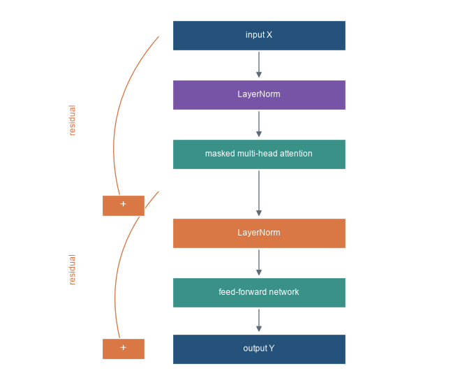
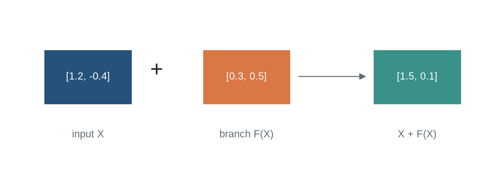
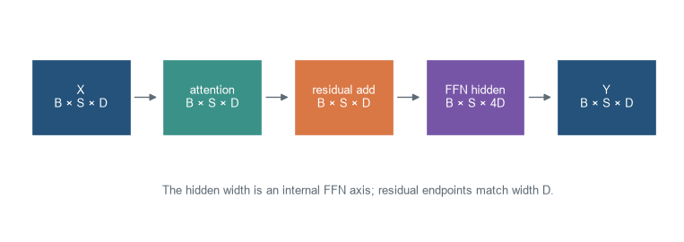
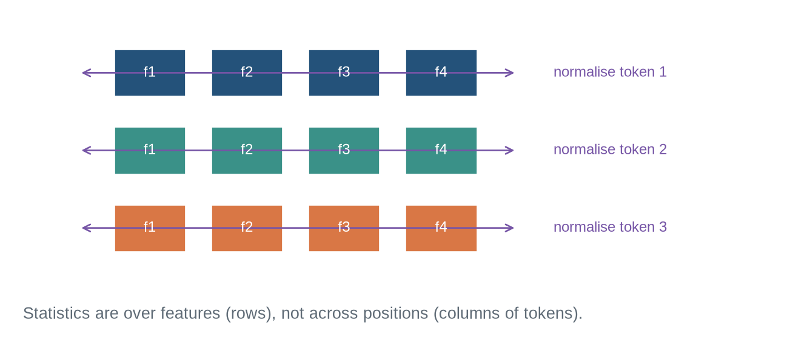

Residual computation around attention and feed-forward transformations
Chapter orientation
Why this chapter matters
Chapters 20 and 21 defined multi-head self-attention and positional information. Neither operation is usually deployed alone. A Transformer block places attention inside residual paths, normalisation, and a position-wise feed-forward network. Repeating the block produces a sequence of contextual representations at a fixed model width.
This chapter defines that computational unit, follows one tensor through it, and distinguishes the original post-normalisation arrangement from the widely used pre-normalisation arrangement. It does not decide whether attention is encoder self-attention, masked decoder self-attention, or cross-attention between sequences. Chapter 23 makes those architectural distinctions.
Learning objectives
By the end of this chapter, you should be able to:
name the attention, residual, normalisation, and feed-forward components of a Transformer block;
state the input and output shape contract of each component;
explain why the feed-forward network is applied independently at every position;
distinguish residual addition from concatenation;
calculate layer normalisation across feature coordinates for one token;
write pre-norm and post-norm block equations;
implement and test a small causal pre-norm Transformer block; and
identify the block-level metadata needed to reproduce a training or inference result.
Running tensor
The running input has batch size two, sequence length four, and model width six: \(X\in\mathbb{R}^{2\times4\times6}\). Every sublayer returns that same shape. Internal widths can change, but residual addition requires the output of each residual branch to return to model width.
Code
import numpy as npimport matplotlib.pyplot as pltfrom matplotlib.patches import Rectangle, FancyArrowPatchplt.style.use("seaborn-v0_8-whitegrid")blue, teal, orange, purple, grey ="#24527a", "#3a9188", "#d97745", "#7655a6", "#5f6b76"fig,ax=plt.subplots(figsize=(8.6,7.2)); ax.axis("off")boxes=[(3.1,6.25,2.1,.58,blue,"input X"),(3.1,5.1,2.1,.58,purple,"LayerNorm"),(3.1,3.95,2.1,.58,teal,"masked multi-head attention"),(3.1,2.42,2.1,.58,orange,"LayerNorm"),(3.1,1.27,2.1,.58,teal,"feed-forward network"),(3.1,.18,2.1,.58,blue,"output Y")]for x,y,w,h,c,label in boxes: ax.add_patch(Rectangle((x,y),w,h,facecolor=c,edgecolor="white")); ax.text(x+w/2,y+h/2,label,ha="center",va="center",color="white",fontsize=9)for y1,y2 in [(6.25,5.68),(5.1,4.53),(3.95,3.0),(2.42,1.85),(1.27,.76)]: ax.add_patch(FancyArrowPatch((4.15,y1),(4.15,y2),arrowstyle="-|>",mutation_scale=12,color=grey))for start,end,label in [((2.95,6.54),(2.5,3.25),"residual"),((2.95,3.54),(2.5,.47),"residual")]: ax.add_patch(FancyArrowPatch(start,end,connectionstyle="arc3,rad=.28",arrowstyle="-|>",mutation_scale=11,color=orange)); ax.text(1.85,(start[1]+end[1])/2,label,color=orange,fontsize=9,rotation=90,va="center")for y in [3.25,.47]: ax.add_patch(Rectangle((2.25,y-.2),.52,.4,facecolor=orange,edgecolor="white")); ax.text(2.51,y,"+",ha="center",va="center",color="white",fontsize=13)ax.set_xlim(1.1,6.5); ax.set_ylim(-.1,7.1); plt.show()

Figure 23.1: A pre-normalisation Transformer block applies normalisation before attention and before the feed-forward network, adding each transformed result back through a residual path.
Transformer block. A residual computation that combines attention, normalisation, and a position-wise feed-forward network. The block transforms a sequence representation while preserving a direct residual route for each position.
Attention sublayer and Transformer block. Attention retrieves and combines information across positions. A complete Transformer block additionally applies residual connections, normalisation, and feed-forward transformation; attention alone is not the whole architecture.
Level 1 - Intuition
A block revises a representation twice
The attention sublayer lets each position retrieve information from eligible positions in the sequence. The feed-forward network then transforms the resulting representation at each position independently. Residual paths keep the existing representation available while each transformation supplies a learned update.
The block does not add new positions or discard existing ones. It maps a sequence of width-\(D\) vectors to another sequence of width-\(D\) vectors. Stacking blocks lets later attention operate on representations that earlier blocks have already contextualised and transformed.
Residual paths preserve an update route
If a sublayer produces \(F(X)\), a residual update has the form \(X+F(X)\). Addition is coordinate-wise and requires equal shape. It is not concatenation: concatenation would increase feature width and change the contract for every following operation.
Residual addition gives a block an explicit identity route. If the learned branch is initially small or unhelpful for a particular token, the representation can still pass forward. The branch is not therefore optional: it can change the representation substantially after training. The point is that the block learns updates to an available input instead of requiring every useful feature to be recreated at every layer.
The residual route also changes the derivative path used in training. For \(Y=X+F(X)\), the derivative with respect to \(X\) includes an identity contribution as well as the derivative through \(F\). That does not guarantee stable optimisation at arbitrary depth, precision, or learning rate. It does provide a direct route that an architecture without the addition would lack. The normalisation placement and initialisation conventions affect how that route behaves in a stack.
Code
x=np.array([1.2,-.4]); update=np.array([.3,.5]); y=x+updatefig,ax=plt.subplots(figsize=(8.6,2.9)); ax.axis("off")for xpos,vec,label,colour in [(1,x,"input X",blue),(3.6,update,"branch F(X)",orange),(6.4,y,"X + F(X)",teal)]: ax.add_patch(Rectangle((xpos,.85),1.45,.65,facecolor=colour,edgecolor="white")); ax.text(xpos+.725,1.175,"["+", ".join(f"{z:.1f}"for z in vec)+"]",ha="center",va="center",color="white"); ax.text(xpos+.725,.46,label,ha="center",color=grey)ax.text(2.85,1.18,"+",fontsize=22,ha="center"); ax.add_patch(FancyArrowPatch((5.15,1.18),(6.32,1.18),arrowstyle="-|>",mutation_scale=13,color=grey))ax.set_xlim(.4,8.3); ax.set_ylim(.1,2); plt.show()

Figure 23.2: A residual branch adds a learned update to an existing representation; it does not replace the representation with the branch output.
Normalisation and the feed-forward network have different jobs
Layer normalisation rescales the feature coordinates of each token representation using that token’s own mean and variance. It does not mix information across sequence positions. The feed-forward network also operates position by position, but it is a learned nonlinear transformation that expands the feature width internally and returns to model width.
Attention is the component that exchanges information across positions. Layer normalisation and the feed-forward network do not replace it. This separation explains why a Transformer block can model sequence interactions while retaining a simple per-position transformation path.
Level 1 identified the two updates. Level 2 specifies their order and tensor contracts.
Level 2 - Mechanics
Pre-norm places normalisation before each branch
For a pre-norm block, write attention as \(A\) and the feed-forward network as \(G\). With two independently parameterised layer-normalisation operations, the computation is
For a causal language model, \(A\) contains the causal self-attention mask from Chapter 20. Positional information has already altered the block input or attention relation under the convention in Chapter 21. Dropout may be placed on branch outputs during training, but it must be disabled or otherwise specified at evaluation.
Code
fig,ax=plt.subplots(figsize=(10,3.4)); ax.axis("off")items=[("X\nB × S × D",blue),("attention\nB × S × D",teal),("residual add\nB × S × D",orange),("FFN hidden\nB × S × 4D",purple),("Y\nB × S × D",blue)]for i,(label,colour) inenumerate(items): x=.35+i*2.05; ax.add_patch(Rectangle((x,1.2),1.55,.78,facecolor=colour,edgecolor="white")); ax.text(x+.775,1.59,label,ha="center",va="center",color="white",fontsize=10)if i<len(items)-1: ax.add_patch(FancyArrowPatch((x+1.58,1.59),(x+2.0,1.59),arrowstyle="-|>",mutation_scale=12,color=grey))ax.text(5.45,.6,"The hidden width is an internal FFN axis; residual endpoints match width D.",ha="center",color=grey)ax.set_xlim(0,10.4); ax.set_ylim(.2,2.5); plt.show()

Figure 23.3: A Transformer block preserves batch, sequence, and model-width axes even though the feed-forward branch expands an internal feature axis.
Layer normalisation uses each token’s feature coordinates
For one token vector \(z\in\mathbb{R}^{D}\), layer normalisation computes
The learnable scale \(\gamma\) and shift \(\beta\) have width \(D\). The statistics are recomputed for each token and each batch item; positions do not share a mean in the standard layer-normalisation operation (Ba, Kiros, and Hinton 2016).
Code
fig,ax=plt.subplots(figsize=(8.5,3.7)); ax.axis("off")for row inrange(3):for col inrange(4): ax.add_patch(Rectangle((1.7+col*.95,2.45-row*.82),.7,.5,facecolor=[blue,teal,orange][row],edgecolor="white")); ax.text(2.05+col*.95,2.7-row*.82,f"f{col+1}",ha="center",va="center",color="white",fontsize=9) ax.add_patch(FancyArrowPatch((1.35,2.7-row*.82),(5.65,2.7-row*.82),arrowstyle="<->",mutation_scale=11,color=purple)); ax.text(6.0,2.7-row*.82,f"normalise token {row+1}",va="center",color=purple,fontsize=9)ax.text(3.55,.1,"Statistics are over features (rows), not across positions (columns of tokens).",ha="center",color=grey)ax.set_xlim(.7,8.2); ax.set_ylim(-.15,3.35); plt.show()

Figure 23.4: Layer normalisation uses the feature coordinates within one token, independently for every batch item and sequence position.
Code
z=np.array([2.,4.,5.,9.]); mean=z.mean(); var=((z-mean)**2).mean(); epsilon=1e-5normalised=(z-mean)/np.sqrt(var+epsilon)print("mean and variance:",round(mean,3),round(var,3))print("normalised coordinates:",normalised.round(3))print("normalised mean and variance:",round(normalised.mean(),6),round(normalised.var(),6))
mean and variance: 5.0 6.5
normalised coordinates: [-1.177 -0.392 0. 1.569]
normalised mean and variance: 0.0 0.999998
The displayed output has mean approximately zero and variance approximately one before the learned affine scale and shift. The small \(\epsilon\) prevents division by zero and affects exact numerical agreement across implementations.
Layer normalisation differs from the batch normalisation discussed in Chapter 12. It has no running population mean or variance to switch between training and evaluation modes, although the surrounding block can still contain dropout. This makes it suitable for variable-length sequences and small batches under its own assumptions; it does not mean normalisation choice is irrelevant to optimisation or precision.
The feed-forward network mixes features, not tokens
A conventional feed-forward network (FFN) has the form
\[G(h)=W_2\,\phi(W_1h+b_1)+b_2,\]
where \(W_1\) expands from \(D\) to an internal width \(D_{ff}\), \(\phi\) is a nonlinearity, and \(W_2\) returns to \(D\). The same weights apply at every sequence position. A position’s FFN output can depend on other tokens only through the contextual representation that attention already supplied.
Code
sequence=np.array([[1.,0.,.2],[.5,.3,.1],[.2,.7,.4]])w1=np.array([[.4,-.2,.3,.1],[.1,.5,-.4,.2],[.3,.2,.1,-.5]])w2=np.array([[.5,.1,-.2,.3],[.2,.4,.1,-.1],[-.3,.2,.5,.2]])hidden=np.maximum(0,sequence@w1); output=hidden@w2.Tprint("input, hidden, output shapes:",sequence.shape,hidden.shape,output.shape)print("each output row comes from the matching input row after this FFN:",output.round(3))
input, hidden, output shapes: (3, 3) (3, 4) (3, 3)
each output row comes from the matching input row after this FFN: [[ 0.166 0.124 0.022]
[ 0.147 0.078 -0.032]
[ 0.174 0.21 -0.003]]
This small example uses ReLU for visibility. Many modern architectures use variants such as GELU or gated feed-forward units. The block contract remains: a position-wise nonlinear branch begins and ends at model width.
The same FFN weights are reused at every position, but the inputs need not be similar. Once attention has mixed contextual information into a representation, the FFN can transform a token differently because its coordinates differ. The phrase position-wise describes which axes the FFN mixes directly, not an assertion that the output ignores context.
Level 3 - Mathematics & Code
Post-norm and pre-norm are different functions
The original Transformer applied normalisation after each residual addition:
This is post-norm. Pre-norm instead applies normalisation before the branches, as in the Level 2 equations. The two arrangements have the same named components but differ in forward values, gradient paths, and training behaviour. A configuration label such as LayerNorm is incomplete without the placement convention (Vaswani et al. 2017; Ba, Kiros, and Hinton 2016).
Code
import torchfrom torch import nntorch.manual_seed(22)toy=torch.randn(1,3,4); branch=nn.Linear(4,4,bias=False); norm=nn.LayerNorm(4)post=norm(toy+branch(toy))pre=toy+branch(norm(toy))print("same shape:",tuple(post.shape),tuple(pre.shape))print("pre-norm and post-norm give different values:",not torch.allclose(post,pre))
same shape: (1, 3, 4) (1, 3, 4)
pre-norm and post-norm give different values: True
The code holds branch and normalisation parameters fixed. The difference follows solely from operation order. Neither arrangement can be called the same block with a cosmetic rearrangement.
For a deep stack, the choice also changes which representation enters the next block and which operations lie on a direct residual route. Training recipes commonly pair an architecture convention with choices about learning-rate schedule, initialisation, clipping, precision, and warm-up. A result attributed to pre-norm therefore needs those accompanying conditions before it can be compared with a post-norm result.
A compact causal pre-norm block makes the branches visible
Code
class PreNormTransformerBlock(nn.Module):def__init__(self,width,heads,ff_width,dropout=0.0):super().__init__()self.norm_attn=nn.LayerNorm(width)self.attn=nn.MultiheadAttention(width,heads,batch_first=True,dropout=dropout)self.norm_ff=nn.LayerNorm(width)self.ff=nn.Sequential(nn.Linear(width,ff_width),nn.GELU(),nn.Linear(ff_width,width))self.dropout=nn.Dropout(dropout)def forward(self,x,need_weights=False): length=x.shape[1]; causal=torch.triu(torch.ones(length,length,device=x.device,dtype=torch.bool),diagonal=1) z=self.norm_attn(x); attn_out,weights=self.attn(z,z,z,attn_mask=causal,need_weights=need_weights,average_attn_weights=False) h=x+self.dropout(attn_out) y=h+self.dropout(self.ff(self.norm_ff(h)))return (y,weights) if need_weights else yblock=PreNormTransformerBlock(width=6,heads=2,ff_width=18).eval()x=torch.randn(2,4,6); y,weights=block(x,need_weights=True)print("input and output:",tuple(x.shape),tuple(y.shape))print("attention weights:",tuple(weights.shape))print("future masked mass:",weights[0,:,1,2:].sum().item())
The attention module receives its normalised input as query, key, and value. The residual addition uses the original \(x\), so the width contract is visible. In a production module, padding masks, positional conventions, precision policy, and cache interfaces must be added to this minimal version.
Tests should cover both residual and causal contracts
Code
changed=x.clone(); changed[:,3]+=100y_base=block(x); y_changed=block(changed)print("earlier causal outputs unchanged:",torch.allclose(y_base[:,:3],y_changed[:,:3],atol=1e-6))zero_block=PreNormTransformerBlock(width=6,heads=2,ff_width=18).eval()for parameter in zero_block.attn.parameters(): parameter.data.zero_()for parameter in zero_block.ff.parameters(): parameter.data.zero_()print("zeroed branches preserve input:",torch.allclose(zero_block(x),x,atol=1e-6))
The first test checks that the complete block preserves the attention mask’s causal boundary. The second checks the residual route: when both learned branches are zeroed, the block reduces to the identity map. These tests are more informative than verifying only that tensor shapes match.
Level 4 - Research & Systems
A block has several width and memory costs
With model width \(D\), feed-forward width \(D_{ff}\), and \(H\) heads, the two attention projections commonly use approximately \(4D^2\) parameters when query, key, value, and output projections all have width \(D\). The FFN uses approximately \(2DD_{ff}\) parameters, excluding biases and gated variants. If \(D_{ff}=4D\), the FFN contains about twice as many dense parameters as the attention projections in one conventional block.
Activation memory and compute follow the sequence length as well as the widths. Attention has a dense query-key relation over positions; the FFN is linear in sequence length but materialises an intermediate tensor of shape \(B\times S\times D_{ff}\). The memory bottleneck therefore depends on length, batch size, dtype, checkpointing policy, kernel implementation, and the selected widths. Counting parameters alone does not identify the limiting resource.
For example, doubling \(D\) approximately quadruples both dense projection parameter counts under a fixed \(D_{ff}/D\) ratio. Doubling sequence length leaves those parameters unchanged, doubles FFN activation rows, and quadruples dense attention-score entries. A systems report should state which dimension changed when it describes a block as expensive or memory-limited.
Figure 23.5: At a conventional feed-forward width of four times model width, the FFN has about twice the dense parameter count of the attention projections within one block.
Block variants must be named rather than assumed
Implementations differ in normalisation placement, epsilon, affine parameters, attention bias, positional method, activation, FFN width, gated versus ungated FFN, dropout locations, bias terms, query/key normalisation, and residual scaling. A checkpoint cannot be reproduced from 12-layer Transformer alone. Those choices alter parameter shapes, forward values, numerical stability, and the valid loading procedure.
A useful checkpoint manifest separates architecture from run state. Architecture includes every block setting needed to build compatible parameter tensors. Run state includes model weights, optimiser and scheduler state when training will resume, random-number-generator state when exact continuation matters, the tokenizer and positional conventions at the model boundary, and the software versions or kernel settings that materially affect execution. Chapter 14 established this recovery principle for training loops; a Transformer block supplies a more detailed architecture contract to it.
The original Transformer block used residual connections and layer normalisation around attention and a position-wise feed-forward network (Vaswani et al. 2017). Later architecture families alter parts of that recipe. The appropriate comparison is therefore at the level of an explicit block specification, followed by controlled evidence on the task and training regime, not a claim that one named component is universally superior.
Auditing a block includes its boundaries
A block audit should record tensor axes; model, head, and FFN widths; normalisation type, placement, epsilon, and affine settings; attention mask and padding-mask conventions; positional method; projection and bias configuration; activation; dropout locations and modes; dtype; cache offset; and parameter initialisation. Tests should cover shape preservation, causal and padding invariance, identity behaviour of zeroed branches, cached versus full-sequence agreement, finite outputs under chosen precision, and checkpoint loading.
One further boundary matters in practice: train and evaluation modes. Dropout and some framework kernels behave differently between them. A reported comparison should state which mode was used, and an inference service should not leave stochastic branch dropout active accidentally.
Common misconceptions
A Transformer block is only an attention layer. It also includes residual paths, normalisation, and a feed-forward transformation.
Residual addition concatenates features. It adds equal-width coordinates and preserves the model-width contract.
Layer normalisation mixes information across tokens. Standard layer norm uses features within each token representation.
The FFN applies one transformation to the whole sequence. The same FFN is applied independently at each position.
Pre-norm and post-norm differ only in notation. They order the operations differently and produce different functions.
A causal attention branch makes every block implementation causal. Mask propagation, padding, cache offsets, and later code paths still require tests.
The attention projections always dominate block parameters. A wide FFN can contain more dense parameters.
A shape test verifies a Transformer block. It does not test residual identity, information boundaries, masks, or numerical policy.
Exercises
State the input and output shape of every branch in a block with batch 8, length 64, width 512, and FFN width 2,048.
Compute layer-normalisation statistics for a supplied four-coordinate token.
Explain why residual addition requires matching width while FFN expansion does not.
Implement the post-norm equations with the same submodules used in the pre-norm code.
Show numerically that pre-norm and post-norm differ for fixed parameters.
Replace ReLU in the small FFN example with GELU and compare outputs on a chosen input.
Calculate approximate attention and FFN parameter counts for \(D=768\) and \(D_{ff}=3,072\).
Add a padding mask to the compact block and test that padded keys receive zero attention mass.
Write a test that a zeroed residual branch leaves its input unchanged.
Test causal invariance after changing the final input position.
Identify the global positional offset needed for a cached one-token continuation.
Measure the intermediate FFN activation size for several batch, length, and dtype choices.
Compare outputs in training and evaluation mode with non-zero dropout.
List the parameters and buffers a checkpoint must retain for the compact block.
Describe a failure caused by mixing post-norm weights with a pre-norm implementation.
State which question Chapter 23 adds beyond the definition of one block.
Summary
A Transformer block preserves sequence length and model width while applying two residual updates. Attention exchanges information across eligible positions; the feed-forward network applies a nonlinear transformation at each position. Layer normalisation controls feature-coordinate scale under a stated placement convention.
Pre-norm and post-norm are distinct block definitions. Their position method, masks, widths, dropout, precision policy, and cache conventions must be specified alongside the equations when a model is trained, compared, or deployed.
Looking ahead
Chapter 23 uses these blocks to distinguish encoder-only, decoder-only, and encoder-decoder Transformer configurations and the tasks their attention patterns support.
Further reading
The original Transformer block is specified in Vaswani et al. (2017). Layer normalisation is introduced by Ba, Kiros, and Hinton (2016).
Ba, Jimmy Lei, Jamie Ryan Kiros, and Geoffrey E. Hinton. 2016. “Layer Normalization.”arXiv Preprint arXiv:1607.06450. https://arxiv.org/abs/1607.06450.
Vaswani, Ashish et al. 2017. “Attention Is All You Need.” In Advances in Neural Information Processing Systems. Vol. 30.
Source Code
---title: "The Transformer Block"subtitle: "Residual computation around attention and feed-forward transformations"---## Chapter orientation### Why this chapter mattersChapters 20 and 21 defined multi-head self-attention and positional information. Neither operation is usually deployed alone. A Transformer block places attention inside residual paths, normalisation, and a position-wise feed-forward network. Repeating the block produces a sequence of contextual representations at a fixed model width.This chapter defines that computational unit, follows one tensor through it, and distinguishes the original post-normalisation arrangement from the widely used pre-normalisation arrangement. It does not decide whether attention is encoder self-attention, masked decoder self-attention, or cross-attention between sequences. Chapter 23 makes those architectural distinctions.### Learning objectivesBy the end of this chapter, you should be able to:- name the attention, residual, normalisation, and feed-forward components of a Transformer block;- state the input and output shape contract of each component;- explain why the feed-forward network is applied independently at every position;- distinguish residual addition from concatenation;- calculate layer normalisation across feature coordinates for one token;- write pre-norm and post-norm block equations;- implement and test a small causal pre-norm Transformer block; and- identify the block-level metadata needed to reproduce a training or inference result.### Running tensorThe running input has batch size two, sequence length four, and model width six: $X\in\mathbb{R}^{2\times4\times6}$. Every sublayer returns that same shape. Internal widths can change, but residual addition requires the output of each residual branch to return to model width.```{python}#| label: fig-transformer-block-overview#| fig-cap: "A pre-normalisation Transformer block applies normalisation before attention and before the feed-forward network, adding each transformed result back through a residual path."#| fig-alt: "A vertical diagram starts with input X, branches through layer norm and masked multi-head attention into a residual add, then through a second layer norm and feed-forward network into a second residual add, producing output Y."import numpy as npimport matplotlib.pyplot as pltfrom matplotlib.patches import Rectangle, FancyArrowPatchplt.style.use("seaborn-v0_8-whitegrid")blue, teal, orange, purple, grey ="#24527a", "#3a9188", "#d97745", "#7655a6", "#5f6b76"fig,ax=plt.subplots(figsize=(8.6,7.2)); ax.axis("off")boxes=[(3.1,6.25,2.1,.58,blue,"input X"),(3.1,5.1,2.1,.58,purple,"LayerNorm"),(3.1,3.95,2.1,.58,teal,"masked multi-head attention"),(3.1,2.42,2.1,.58,orange,"LayerNorm"),(3.1,1.27,2.1,.58,teal,"feed-forward network"),(3.1,.18,2.1,.58,blue,"output Y")]for x,y,w,h,c,label in boxes: ax.add_patch(Rectangle((x,y),w,h,facecolor=c,edgecolor="white")); ax.text(x+w/2,y+h/2,label,ha="center",va="center",color="white",fontsize=9)for y1,y2 in [(6.25,5.68),(5.1,4.53),(3.95,3.0),(2.42,1.85),(1.27,.76)]: ax.add_patch(FancyArrowPatch((4.15,y1),(4.15,y2),arrowstyle="-|>",mutation_scale=12,color=grey))for start,end,label in [((2.95,6.54),(2.5,3.25),"residual"),((2.95,3.54),(2.5,.47),"residual")]: ax.add_patch(FancyArrowPatch(start,end,connectionstyle="arc3,rad=.28",arrowstyle="-|>",mutation_scale=11,color=orange)); ax.text(1.85,(start[1]+end[1])/2,label,color=orange,fontsize=9,rotation=90,va="center")for y in [3.25,.47]: ax.add_patch(Rectangle((2.25,y-.2),.52,.4,facecolor=orange,edgecolor="white")); ax.text(2.51,y,"+",ha="center",va="center",color="white",fontsize=13)ax.set_xlim(1.1,6.5); ax.set_ylim(-.1,7.1); plt.show()```::: {.concept-box .concept-core #concept-transformer-block data-term="Transformer block" data-domain="Representations and Transformers"}**Transformer block.** A residual computation that combines attention, normalisation, and a position-wise feed-forward network. The block transforms a sequence representation while preserving a direct residual route for each position.:::::: {.concept-box .concept-distinction #concept-attention-block data-term="Attention sublayer and Transformer block" data-domain="Representations and Transformers"}**Attention sublayer and Transformer block.** Attention retrieves and combines information across positions. A complete Transformer block additionally applies residual connections, normalisation, and feed-forward transformation; attention alone is not the whole architecture.:::## Level 1 - Intuition### A block revises a representation twiceThe attention sublayer lets each position retrieve information from eligible positions in the sequence. The feed-forward network then transforms the resulting representation at each position independently. Residual paths keep the existing representation available while each transformation supplies a learned update.The block does not add new positions or discard existing ones. It maps a sequence of width-$D$ vectors to another sequence of width-$D$ vectors. Stacking blocks lets later attention operate on representations that earlier blocks have already contextualised and transformed.### Residual paths preserve an update routeIf a sublayer produces $F(X)$, a residual update has the form $X+F(X)$. Addition is coordinate-wise and requires equal shape. It is not concatenation: concatenation would increase feature width and change the contract for every following operation.Residual addition gives a block an explicit identity route. If the learned branch is initially small or unhelpful for a particular token, the representation can still pass forward. The branch is not therefore optional: it can change the representation substantially after training. The point is that the block learns updates to an available input instead of requiring every useful feature to be recreated at every layer.The residual route also changes the derivative path used in training. For $Y=X+F(X)$, the derivative with respect to $X$ includes an identity contribution as well as the derivative through $F$. That does not guarantee stable optimisation at arbitrary depth, precision, or learning rate. It does provide a direct route that an architecture without the addition would lack. The normalisation placement and initialisation conventions affect how that route behaves in a stack.```{python}#| label: fig-residual-update#| fig-cap: "A residual branch adds a learned update to an existing representation; it does not replace the representation with the branch output."#| fig-alt: "A two-coordinate input vector and a smaller two-coordinate update vector are added to make an output vector, with arrows showing coordinate-wise addition."x=np.array([1.2,-.4]); update=np.array([.3,.5]); y=x+updatefig,ax=plt.subplots(figsize=(8.6,2.9)); ax.axis("off")for xpos,vec,label,colour in [(1,x,"input X",blue),(3.6,update,"branch F(X)",orange),(6.4,y,"X + F(X)",teal)]: ax.add_patch(Rectangle((xpos,.85),1.45,.65,facecolor=colour,edgecolor="white")); ax.text(xpos+.725,1.175,"["+", ".join(f"{z:.1f}"for z in vec)+"]",ha="center",va="center",color="white"); ax.text(xpos+.725,.46,label,ha="center",color=grey)ax.text(2.85,1.18,"+",fontsize=22,ha="center"); ax.add_patch(FancyArrowPatch((5.15,1.18),(6.32,1.18),arrowstyle="-|>",mutation_scale=13,color=grey))ax.set_xlim(.4,8.3); ax.set_ylim(.1,2); plt.show()```### Normalisation and the feed-forward network have different jobsLayer normalisation rescales the feature coordinates of each token representation using that token's own mean and variance. It does not mix information across sequence positions. The feed-forward network also operates position by position, but it is a learned nonlinear transformation that expands the feature width internally and returns to model width.Attention is the component that exchanges information across positions. Layer normalisation and the feed-forward network do not replace it. This separation explains why a Transformer block can model sequence interactions while retaining a simple per-position transformation path.Level 1 identified the two updates. Level 2 specifies their order and tensor contracts.## Level 2 - Mechanics### Pre-norm places normalisation before each branchFor a pre-norm block, write attention as $A$ and the feed-forward network as $G$. With two independently parameterised layer-normalisation operations, the computation is$$H=X+A(\operatorname{LN}_1(X)),\qquad Y=H+G(\operatorname{LN}_2(H)).$$For a causal language model, $A$ contains the causal self-attention mask from Chapter 20. Positional information has already altered the block input or attention relation under the convention in Chapter 21. Dropout may be placed on branch outputs during training, but it must be disabled or otherwise specified at evaluation.```{python}#| label: fig-block-shapes#| fig-cap: "A Transformer block preserves batch, sequence, and model-width axes even though the feed-forward branch expands an internal feature axis."#| fig-alt: "A shape diagram shows B by S by D entering attention and leaving at B by S by D, then entering a feed-forward network that temporarily becomes B by S by four D before returning to B by S by D."fig,ax=plt.subplots(figsize=(10,3.4)); ax.axis("off")items=[("X\nB × S × D",blue),("attention\nB × S × D",teal),("residual add\nB × S × D",orange),("FFN hidden\nB × S × 4D",purple),("Y\nB × S × D",blue)]for i,(label,colour) inenumerate(items): x=.35+i*2.05; ax.add_patch(Rectangle((x,1.2),1.55,.78,facecolor=colour,edgecolor="white")); ax.text(x+.775,1.59,label,ha="center",va="center",color="white",fontsize=10)if i<len(items)-1: ax.add_patch(FancyArrowPatch((x+1.58,1.59),(x+2.0,1.59),arrowstyle="-|>",mutation_scale=12,color=grey))ax.text(5.45,.6,"The hidden width is an internal FFN axis; residual endpoints match width D.",ha="center",color=grey)ax.set_xlim(0,10.4); ax.set_ylim(.2,2.5); plt.show()```### Layer normalisation uses each token's feature coordinatesFor one token vector $z\in\mathbb{R}^{D}$, layer normalisation computes$$\mu=\frac{1}{D}\sum_{d=1}^{D}z_d,\qquad \sigma^2=\frac{1}{D}\sum_{d=1}^{D}(z_d-\mu)^2,$$$$\operatorname{LN}(z)_d=\gamma_d\frac{z_d-\mu}{\sqrt{\sigma^2+\epsilon}}+\beta_d.$$The learnable scale $\gamma$ and shift $\beta$ have width $D$. The statistics are recomputed for each token and each batch item; positions do not share a mean in the standard layer-normalisation operation [@ba2016layernorm].```{python}#| label: fig-layernorm-axis#| fig-cap: "Layer normalisation uses the feature coordinates within one token, independently for every batch item and sequence position."#| fig-alt: "A three-by-four grid represents three token vectors with four features each. Horizontal arrows group each row for separate normalisation; no arrow connects token rows."fig,ax=plt.subplots(figsize=(8.5,3.7)); ax.axis("off")for row inrange(3):for col inrange(4): ax.add_patch(Rectangle((1.7+col*.95,2.45-row*.82),.7,.5,facecolor=[blue,teal,orange][row],edgecolor="white")); ax.text(2.05+col*.95,2.7-row*.82,f"f{col+1}",ha="center",va="center",color="white",fontsize=9) ax.add_patch(FancyArrowPatch((1.35,2.7-row*.82),(5.65,2.7-row*.82),arrowstyle="<->",mutation_scale=11,color=purple)); ax.text(6.0,2.7-row*.82,f"normalise token {row+1}",va="center",color=purple,fontsize=9)ax.text(3.55,.1,"Statistics are over features (rows), not across positions (columns of tokens).",ha="center",color=grey)ax.set_xlim(.7,8.2); ax.set_ylim(-.15,3.35); plt.show()``````{python}z=np.array([2.,4.,5.,9.]); mean=z.mean(); var=((z-mean)**2).mean(); epsilon=1e-5normalised=(z-mean)/np.sqrt(var+epsilon)print("mean and variance:",round(mean,3),round(var,3))print("normalised coordinates:",normalised.round(3))print("normalised mean and variance:",round(normalised.mean(),6),round(normalised.var(),6))```The displayed output has mean approximately zero and variance approximately one before the learned affine scale and shift. The small $\epsilon$ prevents division by zero and affects exact numerical agreement across implementations.Layer normalisation differs from the batch normalisation discussed in Chapter 12. It has no running population mean or variance to switch between training and evaluation modes, although the surrounding block can still contain dropout. This makes it suitable for variable-length sequences and small batches under its own assumptions; it does not mean normalisation choice is irrelevant to optimisation or precision.### The feed-forward network mixes features, not tokensA conventional feed-forward network (FFN) has the form$$G(h)=W_2\,\phi(W_1h+b_1)+b_2,$$where $W_1$ expands from $D$ to an internal width $D_{ff}$, $\phi$ is a nonlinearity, and $W_2$ returns to $D$. The same weights apply at every sequence position. A position's FFN output can depend on other tokens only through the contextual representation that attention already supplied.```{python}sequence=np.array([[1.,0.,.2],[.5,.3,.1],[.2,.7,.4]])w1=np.array([[.4,-.2,.3,.1],[.1,.5,-.4,.2],[.3,.2,.1,-.5]])w2=np.array([[.5,.1,-.2,.3],[.2,.4,.1,-.1],[-.3,.2,.5,.2]])hidden=np.maximum(0,sequence@w1); output=hidden@w2.Tprint("input, hidden, output shapes:",sequence.shape,hidden.shape,output.shape)print("each output row comes from the matching input row after this FFN:",output.round(3))```This small example uses ReLU for visibility. Many modern architectures use variants such as GELU or gated feed-forward units. The block contract remains: a position-wise nonlinear branch begins and ends at model width.The same FFN weights are reused at every position, but the inputs need not be similar. Once attention has mixed contextual information into a representation, the FFN can transform a token differently because its coordinates differ. The phrase *position-wise* describes which axes the FFN mixes directly, not an assertion that the output ignores context.## Level 3 - Mathematics & Code### Post-norm and pre-norm are different functionsThe original Transformer applied normalisation after each residual addition:$$H=\operatorname{LN}_1(X+A(X)),\qquad Y=\operatorname{LN}_2(H+G(H)).$$This is post-norm. Pre-norm instead applies normalisation before the branches, as in the Level 2 equations. The two arrangements have the same named components but differ in forward values, gradient paths, and training behaviour. A configuration label such as `LayerNorm` is incomplete without the placement convention [@vaswani2017; @ba2016layernorm].```{python}import torchfrom torch import nntorch.manual_seed(22)toy=torch.randn(1,3,4); branch=nn.Linear(4,4,bias=False); norm=nn.LayerNorm(4)post=norm(toy+branch(toy))pre=toy+branch(norm(toy))print("same shape:",tuple(post.shape),tuple(pre.shape))print("pre-norm and post-norm give different values:",not torch.allclose(post,pre))```The code holds branch and normalisation parameters fixed. The difference follows solely from operation order. Neither arrangement can be called the same block with a cosmetic rearrangement.For a deep stack, the choice also changes which representation enters the next block and which operations lie on a direct residual route. Training recipes commonly pair an architecture convention with choices about learning-rate schedule, initialisation, clipping, precision, and warm-up. A result attributed to `pre-norm` therefore needs those accompanying conditions before it can be compared with a post-norm result.### A compact causal pre-norm block makes the branches visible```{python}class PreNormTransformerBlock(nn.Module):def__init__(self,width,heads,ff_width,dropout=0.0):super().__init__()self.norm_attn=nn.LayerNorm(width)self.attn=nn.MultiheadAttention(width,heads,batch_first=True,dropout=dropout)self.norm_ff=nn.LayerNorm(width)self.ff=nn.Sequential(nn.Linear(width,ff_width),nn.GELU(),nn.Linear(ff_width,width))self.dropout=nn.Dropout(dropout)def forward(self,x,need_weights=False): length=x.shape[1]; causal=torch.triu(torch.ones(length,length,device=x.device,dtype=torch.bool),diagonal=1) z=self.norm_attn(x); attn_out,weights=self.attn(z,z,z,attn_mask=causal,need_weights=need_weights,average_attn_weights=False) h=x+self.dropout(attn_out) y=h+self.dropout(self.ff(self.norm_ff(h)))return (y,weights) if need_weights else yblock=PreNormTransformerBlock(width=6,heads=2,ff_width=18).eval()x=torch.randn(2,4,6); y,weights=block(x,need_weights=True)print("input and output:",tuple(x.shape),tuple(y.shape))print("attention weights:",tuple(weights.shape))print("future masked mass:",weights[0,:,1,2:].sum().item())```The attention module receives its normalised input as query, key, and value. The residual addition uses the original $x$, so the width contract is visible. In a production module, padding masks, positional conventions, precision policy, and cache interfaces must be added to this minimal version.### Tests should cover both residual and causal contracts```{python}changed=x.clone(); changed[:,3]+=100y_base=block(x); y_changed=block(changed)print("earlier causal outputs unchanged:",torch.allclose(y_base[:,:3],y_changed[:,:3],atol=1e-6))zero_block=PreNormTransformerBlock(width=6,heads=2,ff_width=18).eval()for parameter in zero_block.attn.parameters(): parameter.data.zero_()for parameter in zero_block.ff.parameters(): parameter.data.zero_()print("zeroed branches preserve input:",torch.allclose(zero_block(x),x,atol=1e-6))```The first test checks that the complete block preserves the attention mask's causal boundary. The second checks the residual route: when both learned branches are zeroed, the block reduces to the identity map. These tests are more informative than verifying only that tensor shapes match.## Level 4 - Research & Systems### A block has several width and memory costsWith model width $D$, feed-forward width $D_{ff}$, and $H$ heads, the two attention projections commonly use approximately $4D^2$ parameters when query, key, value, and output projections all have width $D$. The FFN uses approximately $2DD_{ff}$ parameters, excluding biases and gated variants. If $D_{ff}=4D$, the FFN contains about twice as many dense parameters as the attention projections in one conventional block.Activation memory and compute follow the sequence length as well as the widths. Attention has a dense query-key relation over positions; the FFN is linear in sequence length but materialises an intermediate tensor of shape $B\times S\times D_{ff}$. The memory bottleneck therefore depends on length, batch size, dtype, checkpointing policy, kernel implementation, and the selected widths. Counting parameters alone does not identify the limiting resource.For example, doubling $D$ approximately quadruples both dense projection parameter counts under a fixed $D_{ff}/D$ ratio. Doubling sequence length leaves those parameters unchanged, doubles FFN activation rows, and quadruples dense attention-score entries. A systems report should state which dimension changed when it describes a block as expensive or memory-limited.```{python}#| label: fig-block-parameter-accounting#| fig-cap: "At a conventional feed-forward width of four times model width, the FFN has about twice the dense parameter count of the attention projections within one block."#| fig-alt: "A bar chart compares attention projection and feed-forward parameter counts across model widths 128, 256, 512, and 1024, with the FFN bars twice as high."widths=np.array([128,256,512,1024]); attention_params=4*widths**2; ffn_params=2*widths*(4*widths)fig,ax=plt.subplots(figsize=(8.5,4.2)); offset=.18ax.bar(np.arange(len(widths))-offset,attention_params/1e6,width=.36,label="attention projections",color=teal)ax.bar(np.arange(len(widths))+offset,ffn_params/1e6,width=.36,label="FFN (Dff = 4D)",color=orange)ax.set_xticks(np.arange(len(widths)),widths); ax.set_xlabel("Model width D"); ax.set_ylabel("Dense parameters (millions)"); ax.set_title("Approximate parameter allocation per block"); ax.legend(); plt.tight_layout(); plt.show()```### Block variants must be named rather than assumedImplementations differ in normalisation placement, epsilon, affine parameters, attention bias, positional method, activation, FFN width, gated versus ungated FFN, dropout locations, bias terms, query/key normalisation, and residual scaling. A checkpoint cannot be reproduced from `12-layer Transformer` alone. Those choices alter parameter shapes, forward values, numerical stability, and the valid loading procedure.A useful checkpoint manifest separates architecture from run state. Architecture includes every block setting needed to build compatible parameter tensors. Run state includes model weights, optimiser and scheduler state when training will resume, random-number-generator state when exact continuation matters, the tokenizer and positional conventions at the model boundary, and the software versions or kernel settings that materially affect execution. Chapter 14 established this recovery principle for training loops; a Transformer block supplies a more detailed architecture contract to it.The original Transformer block used residual connections and layer normalisation around attention and a position-wise feed-forward network [@vaswani2017]. Later architecture families alter parts of that recipe. The appropriate comparison is therefore at the level of an explicit block specification, followed by controlled evidence on the task and training regime, not a claim that one named component is universally superior.### Auditing a block includes its boundariesA block audit should record tensor axes; model, head, and FFN widths; normalisation type, placement, epsilon, and affine settings; attention mask and padding-mask conventions; positional method; projection and bias configuration; activation; dropout locations and modes; dtype; cache offset; and parameter initialisation. Tests should cover shape preservation, causal and padding invariance, identity behaviour of zeroed branches, cached versus full-sequence agreement, finite outputs under chosen precision, and checkpoint loading.One further boundary matters in practice: train and evaluation modes. Dropout and some framework kernels behave differently between them. A reported comparison should state which mode was used, and an inference service should not leave stochastic branch dropout active accidentally.## Common misconceptions- **A Transformer block is only an attention layer.** It also includes residual paths, normalisation, and a feed-forward transformation.- **Residual addition concatenates features.** It adds equal-width coordinates and preserves the model-width contract.- **Layer normalisation mixes information across tokens.** Standard layer norm uses features within each token representation.- **The FFN applies one transformation to the whole sequence.** The same FFN is applied independently at each position.- **Pre-norm and post-norm differ only in notation.** They order the operations differently and produce different functions.- **A causal attention branch makes every block implementation causal.** Mask propagation, padding, cache offsets, and later code paths still require tests.- **The attention projections always dominate block parameters.** A wide FFN can contain more dense parameters.- **A shape test verifies a Transformer block.** It does not test residual identity, information boundaries, masks, or numerical policy.## Exercises1. State the input and output shape of every branch in a block with batch 8, length 64, width 512, and FFN width 2,048.2. Compute layer-normalisation statistics for a supplied four-coordinate token.3. Explain why residual addition requires matching width while FFN expansion does not.4. Implement the post-norm equations with the same submodules used in the pre-norm code.5. Show numerically that pre-norm and post-norm differ for fixed parameters.6. Replace ReLU in the small FFN example with GELU and compare outputs on a chosen input.7. Calculate approximate attention and FFN parameter counts for $D=768$ and $D_{ff}=3,072$.8. Add a padding mask to the compact block and test that padded keys receive zero attention mass.9. Write a test that a zeroed residual branch leaves its input unchanged.10. Test causal invariance after changing the final input position.11. Identify the global positional offset needed for a cached one-token continuation.12. Measure the intermediate FFN activation size for several batch, length, and dtype choices.13. Compare outputs in training and evaluation mode with non-zero dropout.14. List the parameters and buffers a checkpoint must retain for the compact block.15. Describe a failure caused by mixing post-norm weights with a pre-norm implementation.16. State which question Chapter 23 adds beyond the definition of one block.## SummaryA Transformer block preserves sequence length and model width while applying two residual updates. Attention exchanges information across eligible positions; the feed-forward network applies a nonlinear transformation at each position. Layer normalisation controls feature-coordinate scale under a stated placement convention.Pre-norm and post-norm are distinct block definitions. Their position method, masks, widths, dropout, precision policy, and cache conventions must be specified alongside the equations when a model is trained, compared, or deployed.## Looking ahead[Chapter 23](23-encoder-decoder-models.qmd) uses these blocks to distinguish encoder-only, decoder-only, and encoder-decoder Transformer configurations and the tasks their attention patterns support.## Further readingThe original Transformer block is specified in @vaswani2017. Layer normalisation is introduced by @ba2016layernorm.